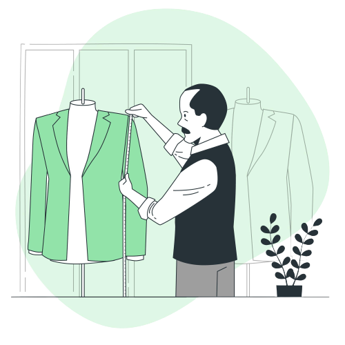
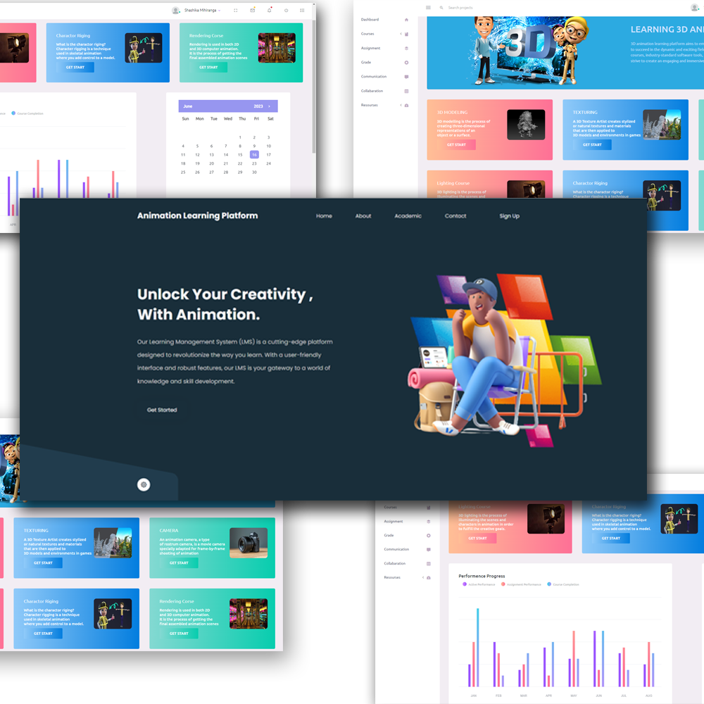
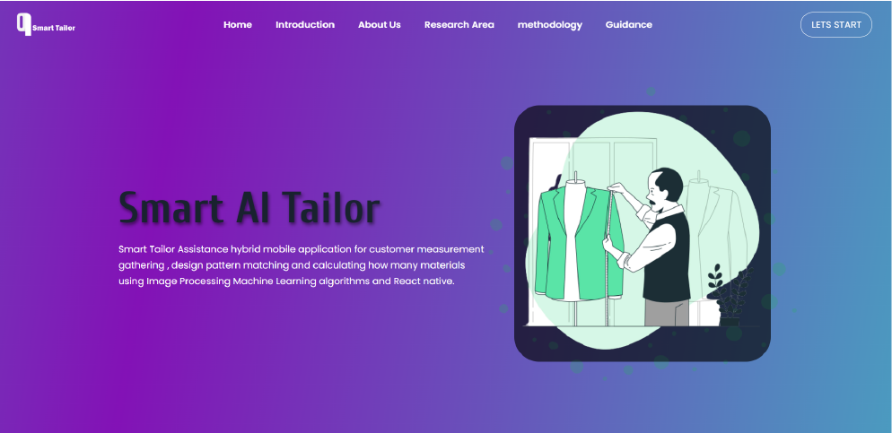

Smart Tailor Assistance hybrid mobile application for customer measurement gathering , design pattern
matching and calculating how many materials using Image Processing Machine Learning algorithms and React
native.

Introduction
In today's fast-paced and interconnected world, mobile phones have become an indispensable part of our
daily lives, serving a multitude of purposes across different age groups. The availability of numerous
applications has further expanded the potential of mobile devices, integrating them seamlessly into
various aspects of our routines. Recognizing this trend, we have developed a mobile application
specifically tailored for the tailoring industry. By leveraging the capabilities of modern smartphones,
our application aims to revolutionize the traditional process of obtaining measurements for customized
clothing.
Traditionally, tailors would need to physically visit customers to meticulously take measurements, often
relying on manual tools and their own expertise. However, our innovative mobile application eliminates the
need for this time-consuming and sometimes inconvenient process. Instead, our solution harnesses the power
of computer vision and machine learning algorithms to derive accurate measurements directly from
customer-provided images.
By simply capturing images of the customer, our application can intelligently extract key measurements of
various body parts required for dressmaking. This automated approach not only saves significant time and
effort for both the customer and the tailor but also ensures precise and consistent measurements,
minimizing the chances of errors or inconsistencies that can arise from manual measurement-taking.

About Us
--Team Members--
Roshan Kumara
Index - ICT-18-835
Email - ict18835@sjp.ac.lk
Phone - 076 9 620 037
Sumedha Bandarigoda
Index - ICT-18-805
Email - ict18805@sjp.ac.lk
Phone - 077 8 486 637
BSH Pahasara
Index - ICT-18-845
Email - ict18845@sjp.ac.lk
Phone - 077 9 800 076
--Supervisors--
Dr.Chamara Liyanage
University of Sri Jayawardenepura, Faculty of Technology,
Email -@sjp.ac.lk
Dr.Senaka Amarakeerthi
University of Sri Jayawardenepura, Faculty of Technology,
Email - @sjp.ac.lk
Research Area
Research Problem
The research problem addressed by our project is the need for an efficient and adaptable solution in
the tailoring industry. The current process of obtaining accurate measurements and personalized color
recommendations is time-consuming, labor-intensive, and prone to errors. Existing research has focused
on either automated measurements or color recommendations separately, often requiring specific
backgrounds for accuracy. Our project aims to develop a mobile application that combines automated
measurements and personalized color recommendations, without the need for a specialized background.
This comprehensive solution will streamline the tailoring process, improve measurement accuracy, and
enhance customer satisfaction.
Main Objective
Develop a mobile application that automates measurements and provides personalized color
recommendations, without the need for a specialized background, to enhance the efficiency and
convenience of the tailoring process.
Specific Objectives
1. To design and implement computer vision algorithms that accurately extract measurements from
customer-provided images, ensuring reliable and precise data for the tailoring process.
2. To create a user-friendly mobile application interface that allows seamless image capture,
measurement input, and color recommendations, ensuring a positive and intuitive user experience.
3. To significantly reduce the time required for the tailoring process.
Research Methodology
01
Data Collection
Taking pictures of individuals in specific poses and collecting real body measurements manually.
Additionally, a separate dataset was gathered to determine suitable dress colors based on face
color.
02
Body Limbs Detection
The process involved training a deep learning model using the collected dataset to detect body limbs
such as belly, elbow, foot, neck, and shoulders.
The model was trained using techniques like image segmentation, data splitting, shuffling, and
augmentation to ensure accurate limb detection.
03
Pose Detection
The MediaPipe framework was utilized for pose estimation to accurately measure the human body from
the images.
It involved detecting the body pose and extracting key points or landmarks representing different
body parts.
04
Body Measurement Calculation
By using the ratio (R) calculated from the height and the distance between specific body joints, the
application estimated the actual measurements of different body parts.
Pixel to Centimeter Conversion using angular resolution based on the camera distance and image
height.
05
Dress Color Suggestions
A separate dataset was created by gathering images of models with diverse skin tones wearing dresses that complemented their skin colors.
A face color detection model was implemented to extract the average color from the face region. Based on the extracted face color, the application recommended suitable dress colors using the curated dataset.
User Guidance

When the user
captures the image, it is mandatory for the user to keep the phone level horizontally and
vertically to the ground and fit his whole body inside the camera view